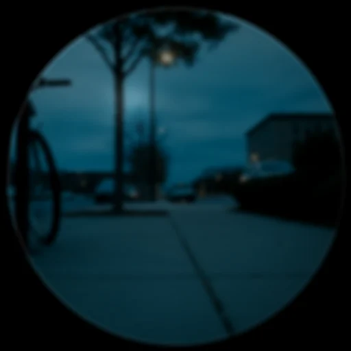
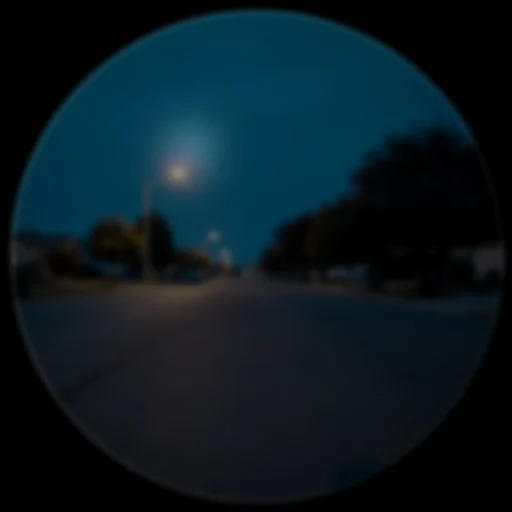
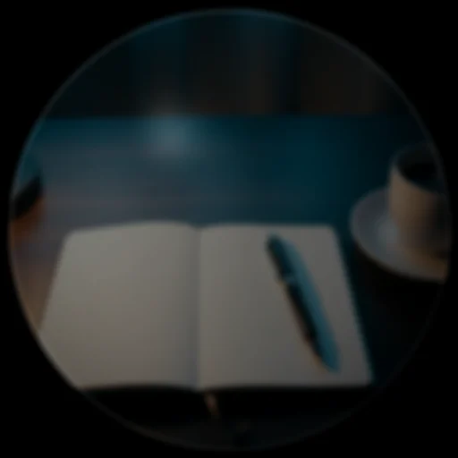
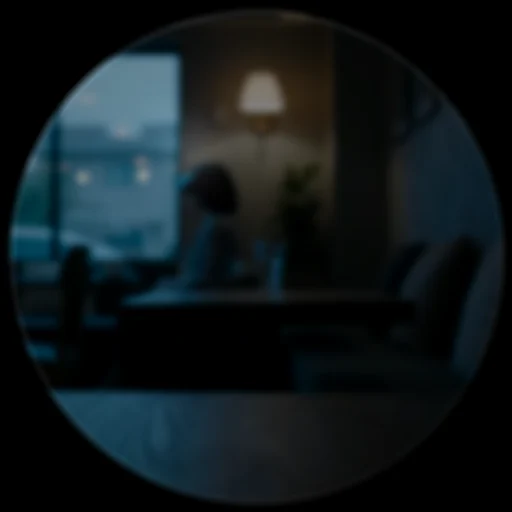
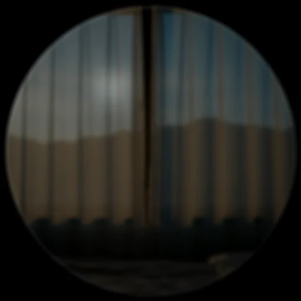
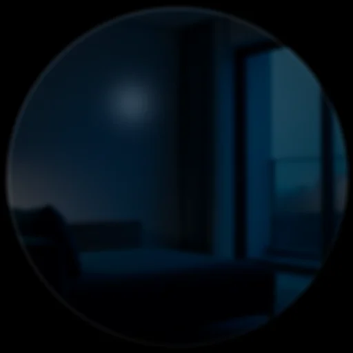
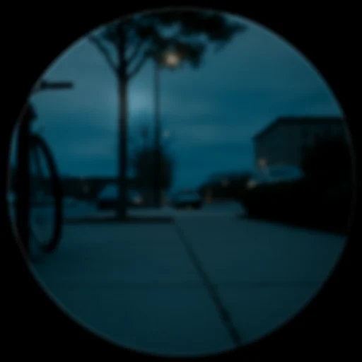

The six lenses and the wider set
Everything DreamLayer does groups into six lenses — the product's mental
model, kept in code as a registry (host-python/src/dreamlayer/lenses.py,
with all_features, find_feature, and lens_of so the taxonomy is
queryable). Two things run underneath all of them: the Privacy Veil (the
spine) and Atmosphere (the ambient light: Inner Weather, the Prism Lens,
Palette Cycling).
| Lens | For | Features |
|---|---|---|
| Memory | your life, remembered | Dream Mode, Ghost Layer, Lucid Recall, REM, Yesterlight, Premonition, Waypath |
| People | who is around you | Social Lens, Timbre, Name Capture |
| Truth | what is true and where beliefs come from | Truth Lens, Candor, Provenance |
| World | understand what you look at | Juno (look-to-know), Label Lens, AI Brain, Rosetta, Puente |
| Life | do, keep, and build | Commitment Drift, Saga, Reality Compiler |
| Together | two wearers, one sky | Confluence |
The core lenses have their own chapters (Juno,
Perception and memory, Truth,
Saga, Privacy). This chapter covers the rest
of the set — each fully wired into the orchestrator, each with a design spec
under docs/.
Dream Mode and the night
Dream Mode (dream_mode/, spec docs/DREAM_MODE.md) is the double-tap
world: the display steps through a starfield door and becomes an instrument
rather than an assistant. While dreaming, camera and IMU frames feed the
engine (on_scene_frame), the microphone FFT feeds it (on_audio_frame),
and two card families render through the dedicated dream path on the device:
- Ghost Layer — world-anchored memory echoes. Stand where a memory lives and a pale WorldAnchorCard wakes, character by character.
- Synesthesia — a poetic six-word read of what the senses feel like, with a dominant color and a gestural sprite.

REM (rem/, spec docs/REM.md) is the sleep cycle:
maybe_dream_tonight(charging) runs consolidation when the glasses charge at
night, gated by NightWatch. It dreams over the day's memories,
consolidates, produces a morning reel, and — the durable part — writes a
RetrievalBias the Horizon reads: what the night decided matters is
slightly brighter the next day.
Yesterlight (docs/YESTERLIGHT.md) folds yesterday's light back into
today's ring; Premonition (docs/PREMONITION.md) is the forward twin — a
RecurrenceModel sweeps for events that usually happen about now and
ghosts them onto the Horizon as breathing-dim dots (never brighter than the
real), hardening the model when a predicted event lands.
Atmosphere
- Inner Weather (
docs/INNER_WEATHER.md) — your own climate, made visible: dream-sky weather driven by your day's texture, rendered through the dynamic palette slots.
| A quiet dream sky (device Lua) | An anchor echo in weather (device Lua) |
|---|---|
- Prism Lens (
docs/PRISM_LENS.md) — the kaleidoscope, rebuilt in Lumen with spring bloom, breathing rotation, and counter-rotating halo rings, inside strict photosensitivity caps. - Palette Cycle (
docs/PALETTE_CYCLE.md) — slow ambient color flows through the leased slots (display/palette_cycle.lua).
World — look at anything
- Scholar (
orchestrator/scholar.py) — read the question and answer it, spell out a form's fields, or put dense text in plain words; and TasteLens (orchestrator/taste.py) — the shelf/menu choice engine with hard dietary vetoes and plugin data connectors. Both routed by the Glance Arbiter or voice; full chapter: Scholar and TasteLens. - Object Lens / Juno-look (
object_lens/, specsdocs/OBJECT_LENS.md) —look_at_object(frame, facet=None|"own"|"ai"|"shop")builds a contextual panel for the thing in view. Providers plug in per domain (an AI provider backed by the tiered brain, a label provider, Rosetta for text); integration seams exist for a laptop, a car, a plant. The lens never identifies people —PERSON_LABELSenforcement keeps humans in the Social Lens's consented domain. - Rosetta (
rosetta.py) is the eye: text you look at — a menu, a sign — OCR'd and translated (translate_seen(text, target)). Puente (orchestrator/puente_bridge.py) is the ear: real-time speech translation into LiveCaptionCards. Complementary by design; they share card styling, not pipelines. Seams: OCR, the translation model, and the microphone. - Waypath (
find_way(subject, heading_deg)) — point-me-to-my-things: a bearing card from your heading to where the remembered object lives. - Docent (
docent(query)) — a venue's own knowledge, answered on its premises from its published collection, offline; and Rosetta Live (translate_heard) — live speech translated on the glass, offline with the Argos pack — now riding a single named-slot figment rather than per-utterance caption cards. Both in the World lenses chapter. - Thread (
thread(image)) — steal color from the world: the palette of whatever you look at, quantized to six named swatches and kept as a recallable memory. The image itself is never stored — only the swatches. - Retrace (
retrace(subject)) — "where did I last see it": recall from passive sightings, blended by confidence and recency (Perception and memory). - Ember (
ember()) — the gentle anniversary layer, sensitive by design: at most one memory, only one you chose to keep (pinned), from about a year ago today — and it stays silent entirely when your inner weather reads storm. It is now the afterglow of the full Ember practice (dreamlayer.ember, docs/EMBER.md): tend a moment until it lives in you, burn the recording with explicit consent, and the cue-only tombstone left behind is exactly what this card resurfaces a year on — for you to answer from memory alone. - Stasis (
stasis, docs/STASIS.md) — save states for your mind. A double-nod (or "hold that thought") freezes the moment you were interrupted — the last thing you were saying, held verbatim — and offers to put you back inside the doing when you return. It never summarizes and never finishes your sentence; it returns your own cues and trusts your cognition. No LLM in the loop, ever.
Truth's siblings
- Candor (
check_consistency(claim), specdocs/COMMITMENT_DRIFT.mdneighborhood) — the on-device self-consistency check: does this claim contradict what you have said and kept? Emits a ConsistencyCard; never touches the network. Veritas reuses itscontradictspredicate for the speaker-against-themselves pass. - Provenance Lens (
trace_provenance(claim),docs/PROVENANCE_LENS.md) — where did this belief come from? Traces a claim to its origins and standing in your own record; pairs with theAnswer.sourcesattribution that every brain answer carries. - Candor Mirror (
orchestrator/candor.py) — the truth machinery, pointed inward. It listens only to your own lines: live speaking pace (a gentle nudge when you sustain past 165 wpm), a filler-word tally (hidden until you peek), and your own narrative drift folded in from the consistency check. The debrief card — eyebrow "How you spoke" — reads like: "162 wpm (up), 9 'um's, and you told the project story differently than Tuesday." Inward-only by construction, and the Veil silences it completely. The design point is written into the module: a deception pipeline pointed at others is a scandal; pointed at yourself it is a coach — and only an open codebase can prove which one it is.
Life — building and keeping
- Commitment Drift (
docs/COMMITMENT_DRIFT.md) — promises as physics: states run blooming, healthy, drifting, cracking, shattered;nudge_commitment/keep_commitment/break_commitmentmove them;tick_driftraises the drift card as decay grows. The Horizon draws the arc; a broken promise shatters exactly once.
- Reality Compiler v2 (
reality_compiler/, specsdocs/rc_v2/) — the build-a-skill path: Rehearsal compiles a described procedure ("three rounds of two minutes, bell between") into a signed Figment — a budget-verified little program that runs on the glass stage with the button driving it.build_skill(name, text)is the orchestrator surface; the wire protocol has first-class figment put/swap/revoke/ack messages, and the phone's Rehearsal screen is now live end to end — every beat round-trips the Brain'src/*endpoints (rehearse, keep, deploy, revoke), with deploys recording BLE envelopes until the glasses transport attaches. Juno also compiles native timers, intervals, and a clock through the same engine, on the spot, with or without a Brain (Juno). The five recorded sessions underout/rc_v2/(round timer, rolling rounds, spar night, a refused strobe — the safety path — and hot-swap revoke) are its executable spec, alongsidedocs/rc_v2/echo.md,loom.md, andrehearsal.md.
The compiler now also teaches itself, three ways: repertoire
ranking learns which kept figment you start where and when, and offers
exactly one — "Gym timer — start the usual?"; rehearsal refinement
notices the scene you keep banishing a figment at ("You end Rounds
around 20:00 of 25:00 — every time.") and proposes a trimmed variant,
which re-runs the whole budget-verify-and-sign path before it can
deploy; and grammar mining counts the phrasings the parser keeps
failing on, locally, so the closed grammar grows from real misses rather
than guesses. The grammar itself grew too: cadence scenes (a slow
breathing envelope in seconds — never a flicker), place and presence
events (place:enter, a bonded partner's emit as your transition),
IMU gestures, and ledger emits — a figment's taps recorded into a
performance log you keep. And a kept figment can now carry a
dedication: signed into its canonical bytes, an heirloom another
device can inherit and prove came from you.
Together — Confluence
Confluence (confluence/, spec docs/CONFLUENCE.md) is two wearers, one
sky: a consented bond entangles two Horizons; togetherness drifts and
settles as you move through the day apart or together. TinCan sends a
single tap down the wire as a gentle ping; weather gifts let one wearer
send the other a sky. The orchestrator surface is
attach_confluence(bonds, sky) / receive_confluence(wire) /
outgoing_weather(), with a tap collector feeding single-clicks while
dreaming. Timbre (docs/TIMBRE.md, People lens) gives known voices their
own audio texture. The phone's Confluence screen presents the bond
lifecycle; live two-device streaming is the pre-hardware seam.
The bond now scales to a group: GhostMode mesh entangles a whole circle under one three-word code, and The Beacon finds your people in a crowd by feel — bearings and distance bands, never coordinates. See The platform.
Lucid Recall — the query router
lucid_recall/router.py is the ask-and-receive front door: it classifies a
query (face keywords route to the Social Lens; fact keywords to the memory
index and the tiered brain) and returns one HUD card. The AI knowledge tier
folds into it — "ask about your own stuff" is Lucid Recall extended from
memory to your files and mail.
Once an unwired island (its memory index was, in the audit's own words,
"implemented nowhere"), it is now genuinely part of the orchestrator:
orc.lucid_query(text, frame) routes through a Retriever-backed index,
is recall-gated like every other read, and its classifier upgrades to a
dense semantic router when the semantic-recall extras are installed —
falling back byte-identically to the keyword path otherwise.
The newer lenses
The lenses added in recent builds. Each card below is the real renderer's output, shown through the glass — the interface is real; the world behind it is illustrative.
| Retrace — where you last saw a thing, by place and time ("north rack, 8:12am"). Ambient-sighting recall; veil-gated. | |
 |
Ember — spaced repetition for the moments you keep: an invitation to retrieve where it happened, then a flare when you reach and it's there. Detailed below. |
 |
Docent — a venue's own knowledge, grounded in a local collection and read from what you look at. |
| Rosetta Live — the ear: offline live translation, each utterance streamed into the named slots of a single on-stage figment. | |
 |
Candor Mirror — the self-coach: after a conversation, your own pace, fillers, and narrative drift — never pointed at anyone else. |
| Waypath — "that way": one bright dot on a faint ring, a distance, and nothing else. No map app. | |
 |
Thread — steal a palette from the light in a room and keep it as a memory (the image is never stored). |
| Sous — hands-free kitchen timers as on-glass figments: "flip in ninety," every pan its own clock. | |
 |
Session — a musician's companion: tempo on the rim, pitch in the luma, a practice log that writes itself. |
| Kiln — an offline-total firing companion; the Brain absent by design, the log kept as a lab notebook. | |
| Stasis — save states for your mind: a double-nod holds the exact thought you were interrupted in, verbatim, and puts you back inside it later. No summary, no LLM. |
Ember — the four states of tending a memory
Ember is spaced repetition for the moments you choose to keep. The flame grows as the memory takes hold — an invitation, a reward, a kind answer, and finally consolidation:
| Prompt — the glow at the doorway: an invitation to retrieve, right where it happened. Walk on and it costs nothing — an unanswered prompt is missed, never a lapse. | |
| Flare — you reached and it was there. One flare, gone in a breath; the reward is the recall itself, and the curve schedules the next glimpse. | |
| Reveal — you reached and it wasn't there. The answer, gently — no score, no streak, no shame. The curve reschedules and forgetting stays kind. | |
 |
Graduated — stability crossed the threshold: the moment lives in you now. The recording can be burned, with explicit consent; the memory stays. |
Stasis — save states for your mind
Interrupted mid-thought? Three things die at once — what you were doing, the half-formed idea, and where you stood. A double-nod (or "hold that thought") freezes all three: the ring buffer already holds your last minute of thinking out loud, so the gesture costs zero words. Come back — tilt to settle in, or say "where was I" — and the ribbon re-lights and offers your own words back, ending on the dash your brain finishes: